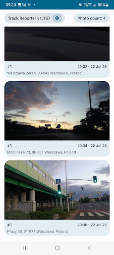
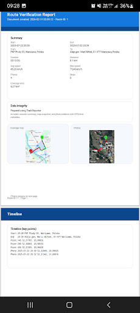
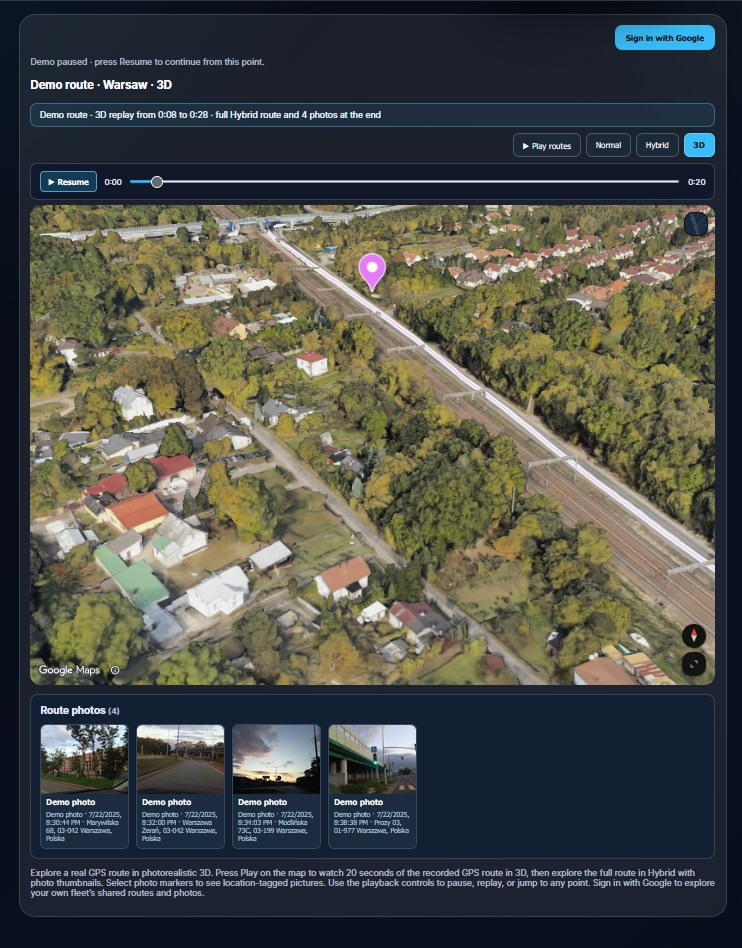

Need a site inspection report that shows more than a written checklist? Track Reporter brings GPS route recording, timestamped photo evidence and PDF documentation into one Android workflow.
For construction site visits, maintenance checks and field service assignments, a useful report should connect location, time and visual evidence. Here is how to create one.
What should a site inspection report include?
Create your report in three steps
Start the GPS route
Start a Track Reporter session as your site visit begins. The app records locations and timestamps and lets you review the route on a map. Basic GPS recording works offline, making it useful at sites with limited connectivity.
Add location-tagged inspection photos
Take photos of equipment, site conditions or completed tasks. Track Reporter keeps images with their associated GPS location and time, so you can review them alongside your recorded visit.

Generate a site inspection report PDF
Finish the session, review its route and activity details, then generate a structured PDF report. A shareable record is easier for customers, supervisors and your own team to review than separate photos and manual notes.
View an example PDF report
Site Inspection Report Sample PDF
Want to see what the finished documentation can look like? Open a sample Route Verification Report generated with Track Reporter. It illustrates how recorded field activity can be presented in a structured PDF.
- Route maps showing where the recorded visit took place
- Session details including time, duration and distance
- A timeline of recorded activity for later review
This is an example of GPS route documentation, not a mandatory safety checklist or a certified inspection form. The sample focuses on GPS route verification; photos captured during the session are demonstrated in the gallery above.
For individuals and field teams
Track Reporter supports inspections, maintenance visits, field service work, security patrols and other activities that need location-based documentation.
For teams, Fleet Live Monitoring lets authorized administrators see locations shared by participating workers. Live sharing requires connectivity and an active sharing session.

See a recorded route before you install
Want to see how route playback and photo evidence look together? Explore Track Reporter’s interactive 3D route demo on the website.

Frequently asked questions
Where can I find a site inspection report sample PDF?
You can view a sample Route Verification Report created with Track Reporter. It shows how a recorded route and activity details can be organized into a PDF.
Can I create a site inspection report on Android?
Yes. Track Reporter lets you record GPS routes, associate photo evidence with the visit and generate PDF documentation on Android.
Can I record GPS routes without internet access?
Yes. Basic GPS route recording works offline. Real-time fleet location sharing requires internet access.
Does a GPS route prove that a job was completed?
A recorded route and timestamped photos provide supporting evidence of a visit; they are not an absolute guarantee that every task was completed.
Create your next site inspection report
Keep GPS routes, site photos and report documentation in one place instead of collecting evidence across multiple apps.
Turn site visits into documented work.
Record the route. Capture the evidence. Generate the report.